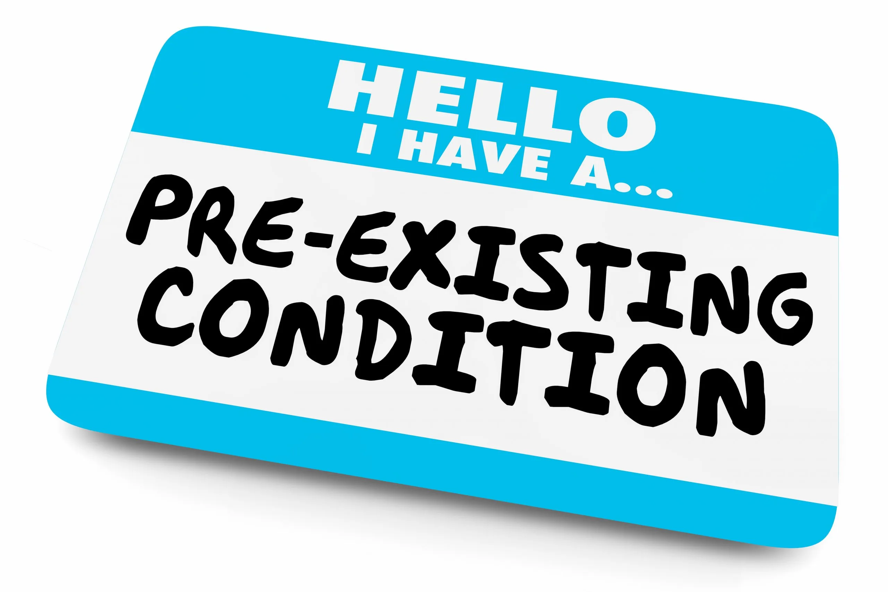

Another huge difference that the lower socioeconomic status of minority groups has on the increased effect that COVID-19 has on the group, is due to how the lower economic status contributes to the group having more pre-existing health conditions and thus this group being more susceptible to the COVID-19 virus. When looking at pre-existing conditions you can see that “Black patients had higher prevalence of obesity, diabetes, hypertension, and chronic kidney disease than white patients” (Price-Haywood, Eboni G., et al., 2020). These underlying health conditions are due to the reason that being in a “residence in a low-income area” is connected with “increased odds of hospital admission” (Price-Haywood, Eboni G., et al., 2020). This higher prevalence of underlying conditions is linked to the fact that the lack of primary care has a correlation with “poorer health outcomes across a variety of diseases” (Arnett, M. J., et al., 2016). Due to these worse health outcomes that these minority groups face, mean that they have a higher chance of being infected by the COVID-19 virus due to their poor health and weakened immune system, while also being more likely to face medical complications and hospitalization when fighting the virus, with “people of all ages with chronic conditions having the highest risk of severe disease, including death” (Price-Haywood, Eboni G., et al., 2020).
